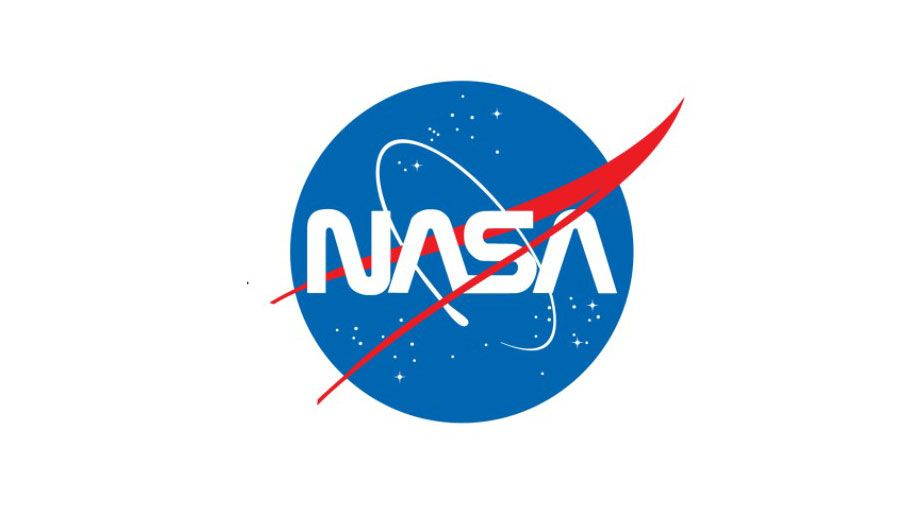

|  | Article By: NASA |
|---|
One Star's End is a Black Hole's Beginning
Most black holes form from the remnants of a large star that dies in a supernova explosion. (Smaller stars become dense neutron stars, which are not massive enough to trap light.) If the total mass of the star is large enough(about three times the mass of the Sun), it can be proven theoretically that no force can keep the star from collapsing under the influence of gravity. However, as the star collapses, a strange thing occurs. As the surface of the star nears an imaginary surface called the "event horizon," time on the star slows relative to the time kept by observers far away. When the surface reaches the event horizon, time stands still, and the star can collapse no more - it is a frozen collapsing object.
Even bigger black holes can result from stellar collisions. Soon after its launch in December 2004, NASA's Swift telescope observed the powerful, fleeting flashes of light known as gamma ray bursts. Chandra and NASA's Hubble Space Telescope later collected data from the event's "afterglow," and together the observations led astronomers to conclude that the powerful explosions can result when a black hole and a neutron star collide, producing another black hole.